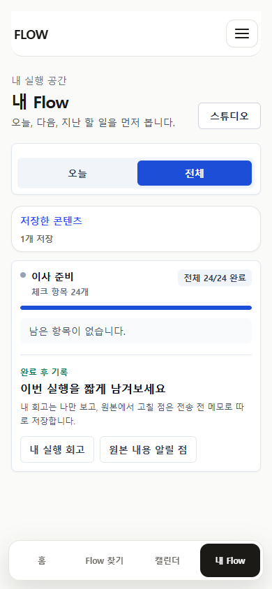
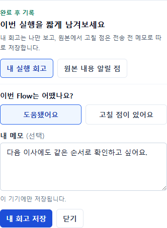
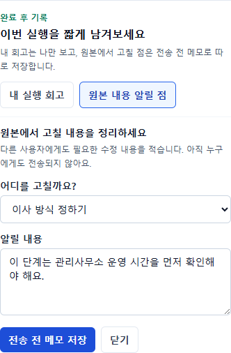
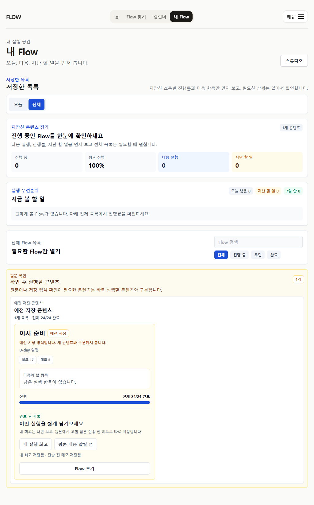

P22-01 focused review
완료 뒤의 개인 회고와 원본 메모를 분리했습니다
공개 리뷰 시스템을 만들기 전에, 사용자가 완료한 실행을 개인적으로 남기는 행동과 다른 사용자에게도 필요한 원본 수정 내용을 구분하는 최소 경계를 검증합니다.
중요: 원본 관련 메모는 아직 전송되지 않습니다. 이 package는 실제 사용자 조사나 제작자 접수 결과가 아니라 구현·E2E·시각 evidence입니다.
완료 후 경로2
공개 리뷰 오해0
가로 overflow0
unit pass380
모바일 상태




데이터 경계
| 행동 | 저장 | 변경하지 않는 것 |
|---|---|---|
| 내 실행 회고 | 비공개 local feedback record | 완료 체크, personal overlay, public Flow |
| 원본 내용 알릴 점 | Flow/할 일/원 URL을 가진 전송 전 draft | 원본 콘텐츠, creator inbox, 공개 리뷰 |
Claude Design이 판단할 것
- 두 행동의 목적과 결과가 충분히 다르게 읽히는가?
- 완료 카드 안의 진입점이 너무 이르거나 과밀하지 않은가?
- 실제 전송 기능을 열기 전 필요한 신뢰·moderation gate는 무엇인가?
- P22-02에서 server transport를 최소 어디까지 구현해야 하는가?